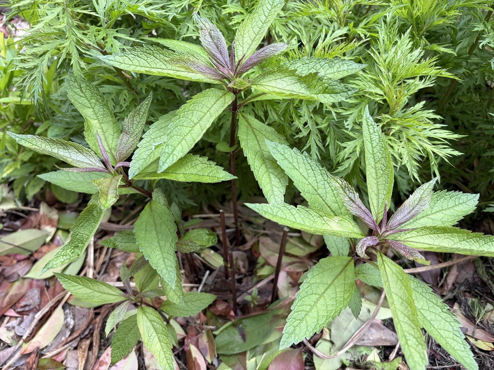

4月25日から約10日。茎がさらに伸び、大きな葉が広がって株全体にボリュームが出てきました。

葉が大きく展開し、株にボリュームが出てきた
4月25日から約10日。ユーパトリウム・ベイビージョーはさらに茎を伸ばし、葉もかなり大きくなってきました。
春先には赤紫色が目立っていた新芽も、成長するにつれて緑色の葉が中心となり、株全体にボリュームが出てきています。先端の若い葉にはまだ赤紫色が残っていて、新しく伸びている部分もよく分かります。
実際に庭で育てていて特に感じるのが、フジバカマ・羽衣と比較すると、ベイビージョーは葉がかなり大きいことです。近くで見ると葉の幅や長さだけでなく、一枚一枚の存在感もしっかりあります。
4月19日に株元から新芽が出ているのを確認してから、まだ3週間も経っていません。それでも、芽吹いたばかりの姿からここまで葉を茂らせました。
冬越し後のベイビージョーは、気温が上がるにつれて成長のスピードも一段と速くなってきたように感じます。
0 件